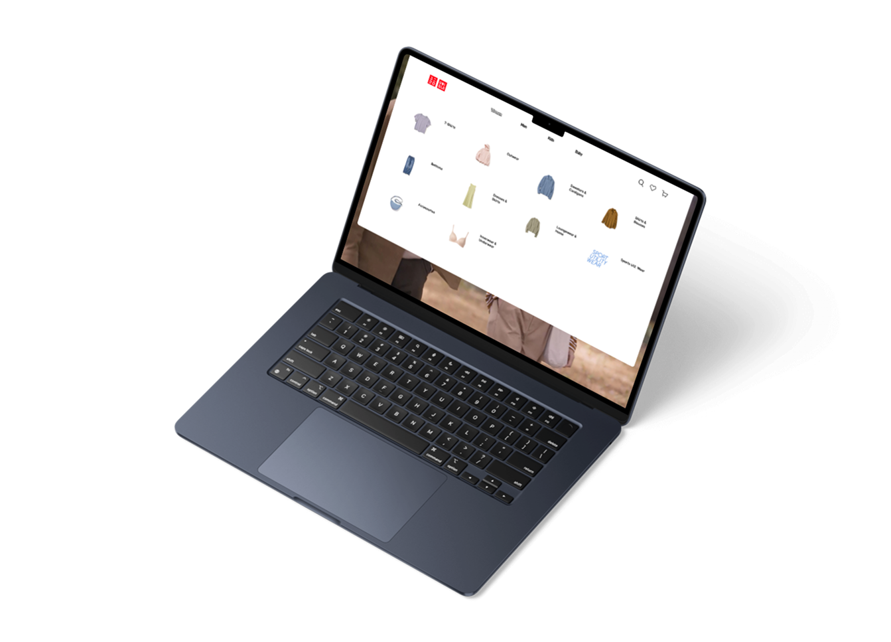

Design Solutions
Two fixes that
changed the experience.

Functional Category Navigation
Replaced the non-functional gender category buttons with clearly labeled, clickable navigation that routes users directly to the right section. This eliminated the single most-reported point of confusion across all 9 interviews.

Hover-Activated Dropdown Menus
Added category dropdowns that activate on hover. This is the standard desktop nav pattern that 90% of users expected and the original site completely lacked. Now users can browse directly from the nav without hunting through the page.